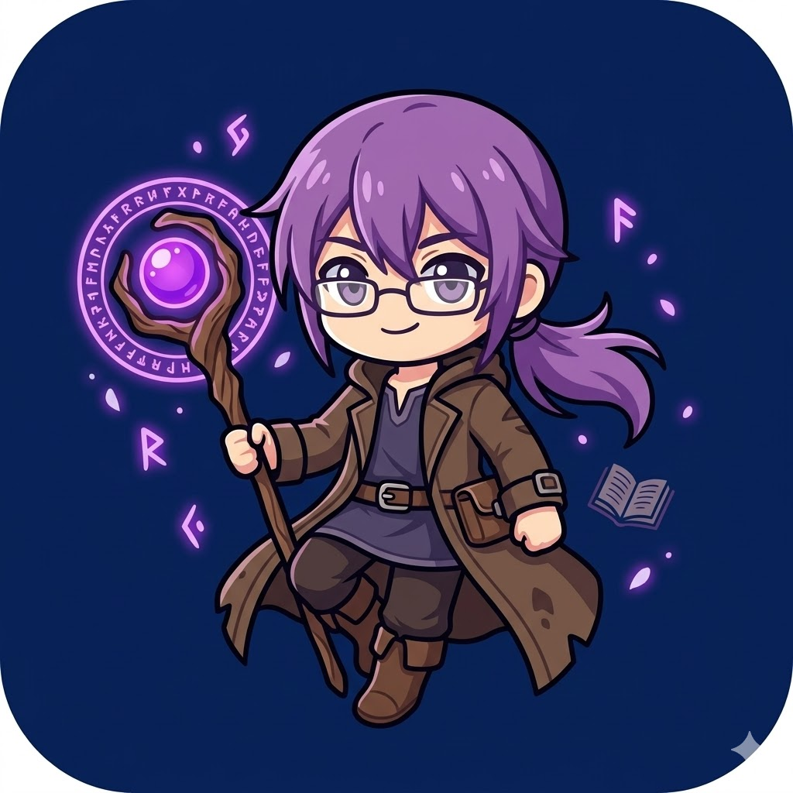

主畫面測試版 · B1

池東守護者
把冒險放進你的主畫面
準備好，再出發。
這個入口連到測試版遊戲。登入與存檔需要網路；圖片、音樂的下載進度可在遊戲內的設定查看。
正在檢查連線狀態…
正在準備入口保存…
加入 iPhone、iPad 主畫面
- 用 Safari 開啟這個測試入口。
- 打開 Safari 的分享選單，選擇「加入主畫面」。找不到時，先點「更多」或編輯分享項目。
- 若有「以網頁 App 打開」，請保持開啟，再點「加入」。
- 以後點「守護者測試」圖示，就能從主畫面進入。
第一次請從主畫面圖示進入後，在遊戲內完成素材下載。瀏覽器與主畫面版可能使用不同的儲存空間。
已下載的遊戲素材由遊戲逐檔管理；這個入口不會清除它們。首次改用新入口可能需要補下載，請以遊戲內顯示的進度為準。沒有網路時可以查看入口與安裝說明，但仍無法登入遊玩。
瀏覽器模式測試遊戲 v24